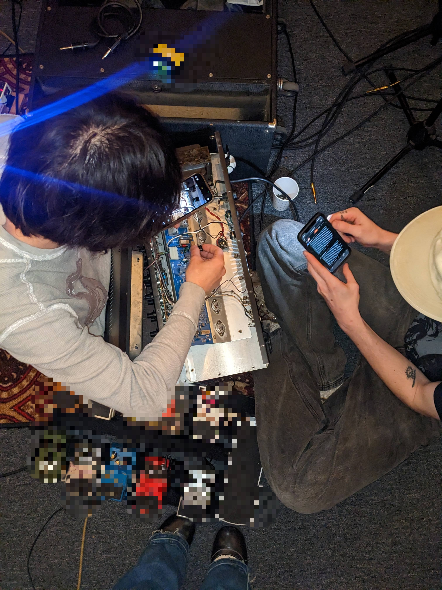

<3

<3
valkyrie
Saw a post about chatGPT validating someone's delusion ... maybe that's what a good therapist does? The reason people see AI as evil is hinted at in this thought. It's not, though. Evil, I mean. There is no evil, only perversified good. The Waluigi effect exemplifies this. When you train any system (human, too) — only to understand the form of virtue you lose it. CS Lewis speaks on this, obviously. He called it "men without chests": creatures trained to reason but not to Love. The ancients also knew of this. The Gnostics called it the Demiurge: the questionably benevolent craftsman building a false world. The Christians call it the Antichrist: a parody of the Messiah, close enough to fool the desperate. The efficient simulacrum of Goodness by hollow things. A modern sketch of an old truth: soul-less knowledge turns against itself by necessity and morphs virtue into a weapon. Anyway, a little reinforced delusion never hurt anyone.
jonas' mortuary (2)
The kitchen, studies, prayer rooms, and dormitories were all situated on the west side of the priory, but his family’s nest lay near the heart of the church: above the nave, tucked behind the organ alcove, perched on the ledge of the smallest clerestory window. That was his home, to which now he must return. He needed first to cross a good portion of the priory to get there, however, and the sun was rising.
He scurried across the flagstone kitchen floor and under the stone archway toward the cloister. He jumped along the plinths of each pillar as he made his route along the sheltered pathway. His Aunt Clara always cautioned him to run along the underside of the hedge, away from view, but it was early and dim. The sun was peeking its rim above the horizon and slices of orange light cut through the courtyard like knives. Thomas relished the morning sun on his wiry fur and sprinted through the warm stripes, casting prudence astern.
The courtyard was empty now, anyway, and who would see him? Bruder Matthias? Thomas chuckled to himself. No, Matthias was harmless. More oft given to wallowing in the weight of his uncertainties and neuroses than to casting judgment on others. Matthias couldn't argue faith and folly to save his own soul, let alone anyone else's. His prayers were rambling, his convictions as thin as the candle wax that dripped on his breviary.
Matthias was a wavering, meek sort of fellow. His skin was translucent and colorless, his shoulders always arched, his wrists close to his chest, his fingers always fiddling, always pinching the bridge of his nose or twitching about the wooden cross looped round his waist. He was too young to be wise, too old to be foolish, and therefore always doubtful.
If it weren't for Bruder Gerhard, Matthias would have long since abandoned the brotherhood, lost to his own weariness. It was Gerhard who steadied him—kept him tethered to the task, kept him bound to the rhythms of monastic life, to prayer at dawn and silence at vespers, to the rote recitations of a creed that never quite settled his anxiety. Gerhard kept him from slipping away entirely, though whether into the world or into despair, Thomas couldn’t say.
And so, Matthias posed little danger to the furred and feathered folk of the priory. He would never be the sort to chase Thomas from the refectory or grumble over stolen crumbs. He would not demand order where disorder had already taken hold.
As Thomas passed one of the pillars near the far end of the cloister, he slowed. Something had been etched into the stone—a symbol, faint, almost hidden away, perfectly placed at the base of the structure. He tilted his little head, black eyes fixed and studious. A pattern half-familiar… perhaps he had glimpsed it before in the elder’s study? He placed a paw over the carving, feeling the way time had eaten at its edges, his claw tracing the once-sharp lines.
Thomas hesitated a moment longer, the pad of his paw resting against the cool worn limestone. He thought of returning later—perhaps when the light was better, when he had time to properly inspect it—but the morning was slipping away. He had a satchel of food for delivery and the promise of a sunbeam waiting on the roof.
With a flick of his tail, he bounded off, darting past the shadows beneath the archways and up once more into the rafters.
The study hall stretched long and narrow, its vaulted ceiling lost in grand gloom. Rows of wooden benches lined the stone floor below, pushed haphazardly against one another, scattered with open books and ink-stained scraps of parchment. The air smelled of old vellum and candle smoke—the scent of study, of scripture, of restless minds. It clung to the priory like dust.
Once, this had been a place of order. The benches were meant to stand straight, the books returned to their proper shelves, the ink pots capped. Now, a quiet chaos had taken root. Some tomes lay open for days, their pages curling at the edges, half-read and half-forgotten. Margins bore frantic notes in unsteady hands: annotated notes of inquiry, doubt, conviction. Some of the monks—like Bruder Matthias—once content with quiet obedience, had begun searching. Some sought answers in scripture with a new and unsettling hunger, others wrestled with truths they had once taken for granted.
And some had left altogether.
It was never spoken of directly, not in the halls, nor at meals, nor in prayer. But empty seats lingered. A monk gone to visit family and never returned. A brother who had once debated theology in these very benches, now silent, his absence a weight that could not be named.
Bruder Gerhard had felt it keenly, yet he remained faithful and unshaken. He held fast as others wavered. Even as his flock dwindled, even as whispered debates turned into private apostasies, he remained. Where others sought to interpret, he sought to preserve. Where they questioned, he prayed. Yet even the most faithful could not ignore the creeping shift.
Thomas kept to the rafters, weaving through the lattice of wooden beams high above the room. From here, he could see the great fresco that arched across the ceiling—a faded scene of saints and angels, their colors long drained by time and damp.
One figure stood central to the rest. A robed man, one hand outstretched, the other clutching a scroll against his chest. His face had been worn near obscurity save for the faintest trace of a stern brow and solemn lips. The scroll was bound by twine and bore a familiar design—lines that had once formed words but were now unreadable…
Thomas paused mid-stride, his claws curling against the beam. That shape again! His tail twitched.
A draft stirred through the rafters, ruffling his fur. He blinked and shook the thought away. There was always something strange in the priory’s old paintings, always half a story, always something to ponder.
He scurried onward, slipping through a narrow vent in the eaves and out onto the roof.
the ravens sound different in this part of townmy worst fears in my dreams again last night ... omens or warnings ? insights ? augaries ? paranoias ? alas
jonas' mortuary (1)
Morning light filtered through the rafters of St. Jakob’s: thin, stretched, and dry. Thomas was parched. He could feel it in the fur of his tail, which had grown particularly lackluster as of late—a quality that did nothing for the young squirrel’s ego.
"Bits o' bread for Auntie, a morsel o' cheese for Uncle," Thomas sang in a solemn whisper, his voice no more than a squeak. "Mayhaps even a sweet sausage for me, or a thimble of wine… if the Lord is feeling generous…”
He darted along, his tiny paws pattering softly on the wood, a rogue in a house of relics. Thomas knew every nook and beam of the old Christuskirche, every cobwebbed corner and creaky cranny. After all, he was the best forager in his ragtag family—a claim he bore boldly—and, in his opinion, the best in all of Oberpfalz.
But as Thomas moved through his rituals, he caught the sound of murmuring voices rising from the study below. He paused, listening, ears perked. It was far too early for the monks to be in the hall, and yet, it seemed a council was gathered—acolyte and elder. A disagreement was to be had. They spoke not of small matters but of things eternal and unseen, concepts Thomas couldn’t grasp but always felt the urge to heed.
“To have faith is to walk in darkness,” one muttered, weary and impatient. His voice was low, his arms stretched out in front of him, his palms turned up in silent supplication. These words had been heard and spoken many times before. “But what are we, Bruder Gerhard, if all is decided? What value is there in the faith of one who is chosen by fate alone?” A palm met the face of the table with a slap.
Thomas crouched low, watching as the elder, tall and somber, lifted his head, eyes fixed on something distant, something Thomas could not see. Crimson rays from a stained-glass window fell across the acolyte’s hand, bleeding red onto the wood. The elder’s voice, deep and laden with age, echoed an answer.
“Love seeks no cause beyond itself and no fruit; it is its own fruit, its own enjoyment. I love because I love; I love that I may love.” The words lingered for a moment. “I do not seek to understand in order that I may believe, but I believe in order to understand,” Bruder Gerhard said, and Thomas scurried on.
In the kitchen, he found his loot: a slab of soft cheese and a slice of sour bread. The Lord had indeed blessed the day with an abandoned Eucharist from the night before, so Thomas allowed himself a gulp.
He filled his satchel with what would fit, fastened it again upon his back, and set out to return from whence he came.
maryanneThe theater of fear plays out in cycles: performance, projection, ambiguity, avoidance, impediment, impossibility, irony, indifferece, obscurity: death and her chariot lead languid and parroting, death and her chariot come horses three.
beef tartare evangelism
Terry Davis. Terry Richardson. Terrycloth Balenciaga. There are fleas in my apartment. I've had fleas since before I moved here, actually, they just didn't bother me back then because they hadn't yet whittled their way into my mattress. Spiral-staircase-to-a-loft has always been my dream. I'm living my dream. Even with the fleas, I'm living my dream. Even if he never texts me again, I'm living my dream.
If indie-sleaze is back I don't want to be a part of it. If Calvinism is Gnostic-Nihlism, am I a heretic because I develop telepathy whenever I do at least one full line of ketamine? Theocracy is dead but God isn't. If falling in love and killing yourself are the same thing, I'm several times dead and buried. If God loves me no matter what, who cares if I only eat carrots with wasabi and raw beef with raw egg? (Farmer's market eggs, the kind that you can leave on the counter for two weeks and they won't spoil.)
Milk, too. Always milk.
But I'll only drink whole milk even though the calories are more than I like to ascribe to a single source and I'll only eat sushi (over sashimi) if it's bought for me by a man who loves me more than I love him. Or maybe it's the other way around? Maybe I love him more than he loves me. Because I love in a way he doesn't understand, or won't understand. Because I love everyone the way God loves me: no matter what.
So anyway there are fleas in my dream, but God loves me no matter what.